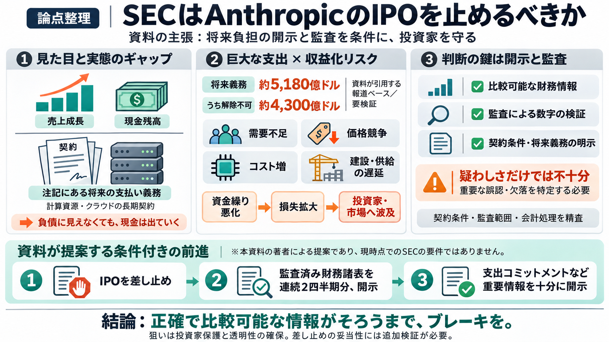

Anthropic files S-1 report ahead of potential record-breaking IPO | Brian C. posted on the topic | LinkedIn
Anthropic IPO: the S-1 is public, and it shows how fast enterprise AI spend is scaling. Anthropic filed with the SEC tod…

売上成長・現金残高が魅力に見える。
将来の支出コミットメントが巨大。
監査の信頼性が十分でない可能性。
同じ土俵で数値が見比べられる。
監査が“検証”の役割を担う。
契約コミットメントを適切に示す。
約5180億ドル規模（報道ベース）。
約4300億ドルが非キャンセル（報道ベース）。
監査が十分でない期間の比重が問題。
生成AIの需要が想定ほど強くない可能性。
コモディティ化で値上げが難しい。
チップ／データセンター等のコストが上がる。
建設遅延・サプライチェーン制約・反発などで収益化が遅れる。
退職口座／個人投資家へ。
バリュエーション集中→下落連鎖の懸念。
固定的支出があるほど反転が遅い。
SECが差し止め（Stop）へ。
監査済み2四半期（Audit：検証）の連続開示。
支出コミットメント等の重要情報を適切に開示。
どの契約が、いつ、どの条件で、財務諸表にどう反映されるか。
“疑わしさ”ではなく、重要な誤認・欠落の特定。
契約で将来支払いが事実上義務化→負債のように負担。
会計数字の検証。未監査が中核にあると信頼性が揺れる。
需要が弱い／価格が上がらない→高コスト投資が損失化。
差し止め（Stop）＋条件付開示。
注記の将来支出コミットの重さ。
投資家保護と透明性確保。
Anthropic IPO: the S-1 is public, and it shows how fast enterprise AI spend is scaling. Anthropic filed with the SEC tod…
The headline numbers: about $16.3B in H1 2026 revenue against an $80.7B net loss Valuation: $965B in May, with reports o…
Anthropic’s revenue per dollar spent on compute has also been growing, according to the S-1. “AI labs like Anthropic hav…
1. Anthropic Confidentially Submits Draft S-1 to the SEC. Accessed June 18, 2026. 2. Anthropic Raises $65B in Series H …
Anthropic is generating breakneck revenue growth but faces a long list of risks that include a narrow customer base and …